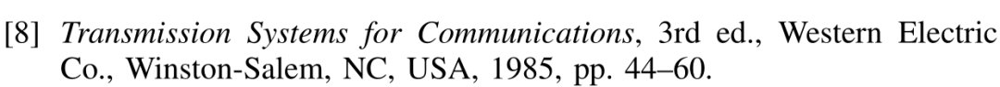

咱写论文，每次都要整个Reference，每个期刊会议，规矩都会稍稍不一样，好在他们都会发指引文档。
这里就整理点基本的规范，统一的规则。每次可以照着找找自己的茬 。这里不讲bib，latex用法，假设我们文章已经写好了，做最后的检查的时候，关于Reference我们要做哪些事情。有错漏欢迎指正补充哦。
。这里不讲bib，latex用法，假设我们文章已经写好了，做最后的检查的时候，关于Reference我们要做哪些事情。有错漏欢迎指正补充哦。
这个规范主要参考的是《IEEE REFERENCE GUIDE》，不是这个领域的可能不适用。
一、作者或编辑
首先不管什么类型的参考，一般都是作者打头，开头得是作者或者发布文档的机构，比如：
作者只有一个人，姓(Last Name)完整保留，名字则只保留每个单词首字母，大写，打点表示省略。
如果有两个作者用and链接：
如果是大于等于三个作者，逗号分割，最后用and连接：
有些论文，作者众多，那么有些期刊会议有要求最多只能显示几个作者，超过一定数量，只写主要作者，其他的用et al.表示省略（et al.斜体），有些则会要求尽可能显示所有作者，除非你找不到人家的名字：

et al.表示作者不止列出的这一个。
另外我们还会在名字后面看到eds. ，表示的是前面的名字是编辑的名字，在参考[1]中，以Eds.形式出现，e大写，如果只有一个编辑，Ed.即可，小写ed.通常指代书的版本：
当然也会有些文档，手册，标准，是没有作者的，那就用文档手册标准的名字开头：

二、文章名称
通常作者名称列完后，紧跟其后的是文章名称，用双引号引起来：

如果是引用一本书，那么双引号里的可以是章节的名称（“Title of chapter in the book,” in Title of His Published Book），上图就是这样的，那如果没有章节名称就直接跟书名(Title of His Published Book)就好：
书名得是斜体。
一样得是斜体的情况有：
-
[Conference Proceedings] “Title of paper,” in Abbreviated Name of Conf.
-
[Conference Proceedings Online] “Title of paper,” in Abbreviated Name of Conf.
-
[Online Dataset Reference] Title, Source, Date
-
[Handbooks] Name of Manual/Handbook, x ed., Abbrev. Name of Co.,
-
[Manuals/Software(Manual (Online))] J. K. Author (or Abbrev. Name of Co., City of Co. Abbrev. State, Country). Name of Manual/Handbook
-
[Manuals/Software(Manual (Print))] Name of Manual/Handbook, x ed., Abbrev. Name of Co., City of Co., Abbrev. State, Country
-
[Manuals/Software(Software)] Title of Software. (version or year), Publisher Name.
-
[Online Video] Video Owner/Creator, Location (if available). Title of Video: In Initial Caps.
-
[Periodicals] J. K. Author, “Name of paper,” Abbrev. Title of Periodical
-
[Periodicals(Periodical in Other Language)] J. K. Author, “Name of paper,” (in Language), Abbrev. Title of Periodical
-
[Periodicals(Virtual Journal)] Name(s) of Ed(s)., “Title of Issue,” in Title of Journal,
-
[Standards] Title of Standard, Standard number, Corporate author, location, date.
-
[U.S. Government Documents] Legislative body. Number of Congress, Session. (year, month day). Number of bill or resolution, Title.
不是斜体的情况有：
-
[Conference Paper] “Title of paper,” presented at the Abbreviated Name of Conf.
-
[Conference Paper Online] J. K. Author. (Date). Title. Presented at Abbreviated Conf. 这个值得注意的是Author和Title中间会有一个Date，另外不像其他，每个子项是用逗号分隔的，这个每个子项是用句点分隔的。
-
[Course] Name of University. (Year). Title of course 这个格式有点像上面。
-
[Coursepack] J. K. Instructor. Title of coursepack. (Semester). Title of course.
-
[Datasets] Author. “Title.” (Date, Year). Distributed by Publisher/Distributor
-
[Lectures] J. K. Author. (Year). Title of lecture
-
[Patent] J. K. Author, “Title of patent,” Country Patent xxx,
-
[Patent Online] Name of the invention, by inventor’s name.
-
[Reports] J. K. Author, “Title of report,” Abbrev. Name of Co., City of Co., Abbrev. State, Country,
-
[Report Online] J. K. Author, “Title of report,” Company, City, State, Country,
-
[M. Theses (B.S., M.S.) and Dissertations (Ph.D.)] J. K. Author, “Title of thesis,” M.S. thesis/Ph.D. dissertation, Abbrev. Dept., Abbrev. Univ., City of Univ., Abbrev. State, year.
-
[Unpublished] J. K. Author, “Title of paper,” unpublished.
这里记一下Conference Proceedings和Conference Paper的区别：
” The Conference Proceedings reference type is best used for unpublished proceedings. Articles that are published as part of the comprehensive conference proceedings should be entered as Conference Paper references.”
这里的理解是：已经出版的Proceedings是Paper，没有出版的是Proceedings。这里我自己是不太会分辨的，一般找到的citation是proceedings就当proceedings，是paper就当paper。
另外再记一个关于缩写的问题，Reference哪些部分要缩写呢：
-
[Book] Abbrev. of Publisher
-
[Conferences and Conference Proceedings] Conference的名称要缩写，这个是重点，不缩写可能会挨骂
 ，而且最好省略大多数的冠词和介词，这个不省略可能不会被骂，可能(经验不丰富，没有参考价值)，举个例子Proceedings of the 1996 Robotics and Automation Conference 可以被缩写成 Proc. 1996 Robotics and Automation Conf. 看到Proc就要条件反射地知道要斜体，不然也可能要挨骂
，而且最好省略大多数的冠词和介词，这个不省略可能不会被骂，可能(经验不丰富，没有参考价值)，举个例子Proceedings of the 1996 Robotics and Automation Conference 可以被缩写成 Proc. 1996 Robotics and Automation Conf. 看到Proc就要条件反射地知道要斜体，不然也可能要挨骂 。Conference名称中出现下列单词时，按下图进行缩写(下图的缩写请一定遵守)：
。Conference名称中出现下列单词时，按下图进行缩写(下图的缩写请一定遵守)：更多缩写方式见参考[1]的附录A。
-
州名缩写：Abbrev. State
-
机构名缩写：Abbrev. Name of Co.
-
月份缩写：Abbrev. Month，月份缩写通常显示前三个字母，比如Jul.
-
期刊名缩写：Abbrev. Title of Periodical
-
大学院系名和大学名缩写：Abbrev. Dept., Abbrev. Univ.
常见符号的意思：
- et al. 指多个作者
- Eds. 指多个编辑
- Ed. 指一个编辑
- ed. 书的版本
- ch. 章节
- sec. 段落
- pp. 从哪页到哪页
- p. 如果只有一页
- vol. 哪一卷
- no. 序号
- Art. no. 期刊的文章号码
- doi: 数位识别码，有doi的话把doi加到http://dx.doi.org/后面，就可以下载这个文章，这个通常也是放在索引的最后，doi和online有一个就行，都没有也没关系。doi前面一般是逗号隔开。
三、Latex bib 参考文献类型：
- article: magazine （指刊登各种文章、小说、诗歌、评议的杂志。） 或 journal （本义为“日报”，现在可指定期发生的周刊、月刊、季刊等或指学术团体出版的刊物、杂志或学报）上的文章
- book: 出版的书
- booklet: 已经发布的，但是没有出版商或机构的作品
- conference: conference proceedings 里的文章
- inbook: 引用书的一部分 (section, chapter, 等等)
- incollection: 书中带独立标题的章节
- inproceedings: conference proceedings 里的文章
- manual: 技术文档
- masterthesis: 硕士论文
- phdthesis: 博士论文
- proceedings: conference proceedings 里的文章
- techreport: 机构发布的报告
- unpublished: 还没有正式出版的文章，或书
- misc: 不属于以上任何一类
最后一些Tips：
- 年份是不可缺少的，每样东西都有发布的年份。时间是很重要的信息。
- 如果有网上的资源链接，可以用[Online]. Available: http://www.web.com这种方式显示在最后。有时候可以没有[Online]。
参考[1]还附有一些有用的附录：
A. Reference的缩写指引，哪个单词该用什么样的缩写都列在了这个表格。
B. 出版商名单（出版商名称中括号和括号里的部分是不用显示在Reference里的）
C. 非英文期刊的缩写
参考：
[1] IEEE REFERENCE GUIDE，2018
[2] Preparation of Papers for IEEE Signal Processing Letters (5-page limit)，2015
Comments